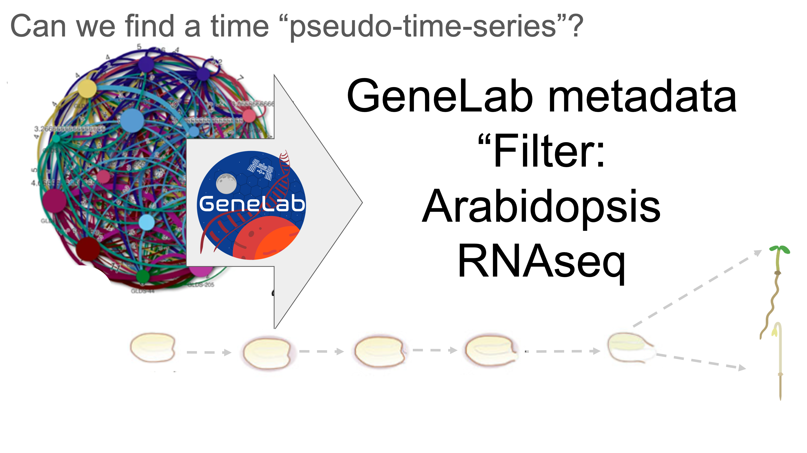
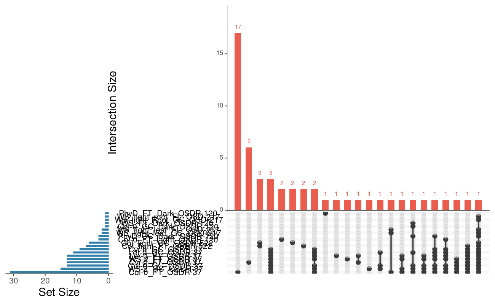
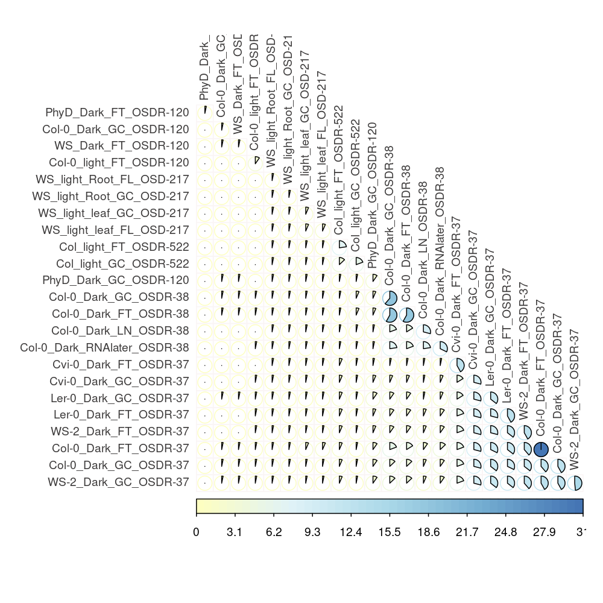
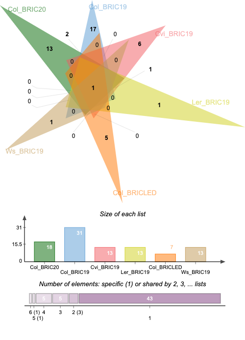

<!DOCTYPE html>
<html lang="en">
<head>
  <meta charset="UTF-8">
  <meta name="viewport" content="width=device-width, initial-scale=1.0">
  <title>Microbiome of Seedlings in Space | NASA OSDR Meta-Analysis</title>
  <meta name="description" content="Meta-transcriptomic extraction and taxonomic profiling of endophytic and commensal microbiomes in Arabidopsis thaliana seedlings across NASA OSDR spaceflight missions.">
  <meta name="keywords" content="Spaceflight, Arabidopsis, Microbiome, Metatranscriptomics, NASA OSDR, Ralstonia pickettii, Weizmannia ginsengihumi, AstroBotany, BLSS">
  
  <link rel="preconnect" href="https://fonts.googleapis.com">
  <link rel="preconnect" href="https://fonts.gstatic.com" crossorigin>
  <link href="https://fonts.googleapis.com/css2?family=Inter:wght@300;400;500;600;700;800&family=JetBrains+Mono:wght@400;500;600&display=swap" rel="stylesheet">

  <style>
    :root {
      --bg-dark: #090d16;
      --bg-card: #111827;
      --bg-card-hover: #1f293d;
      --border-color: rgba(255, 255, 255, 0.1);
      --border-glow: rgba(56, 189, 248, 0.3);
      --accent-cyan: #38bdf8;
      --accent-emerald: #10b981;
      --accent-purple: #a855f7;
      --accent-amber: #f59e0b;
      --text-main: #f3f4f6;
      --text-muted: #9ca3af;
      --text-dim: #6b7280;
      --shadow-lg: 0 10px 25px -5px rgba(0, 0, 0, 0.5), 0 8px 10px -6px rgba(0, 0, 0, 0.5);
      --nav-bg: rgba(9, 13, 22, 0.85);
      --brand-color: #ffffff;
      --table-header-bg: rgba(255, 255, 255, 0.04);
      --table-row-hover: rgba(255, 255, 255, 0.02);
      --search-bg: rgba(0, 0, 0, 0.3);
      --step-box-bg: rgba(255, 255, 255, 0.03);
      --krona-header-bg: rgba(255, 255, 255, 0.03);
      --hero-heading-gradient: linear-gradient(180deg, #ffffff 30%, #cbd5e1 100%);
      --manuscript-box-bg: linear-gradient(135deg, rgba(37, 99, 235, 0.1), rgba(168, 85, 247, 0.1));
      --manuscript-box-border: rgba(56, 189, 248, 0.3);
      --mini-badge-bg: rgba(255, 255, 255, 0.06);
      --mini-badge-color: #e2e8f0;
      --figure-wrap-bg: #000000;
      --btn-outline-bg: rgba(255, 255, 255, 0.05);
      --heading-color: #ffffff;
      --badge-seed-text: #34d399;
      --badge-human-text: #fbbf24;
      --badge-water-text: #38bdf8;
      --radial-1: rgba(56, 189, 248, 0.08);
      --radial-2: rgba(168, 85, 247, 0.08);
      color-scheme: dark;
    }

    :root[data-theme="light"] {
      --bg-dark: #f8fafc;
      --bg-card: #ffffff;
      --bg-card-hover: #f1f5f9;
      --border-color: rgba(0, 0, 0, 0.1);
      --border-glow: rgba(2, 132, 199, 0.3);
      --accent-cyan: #0284c7;
      --accent-emerald: #059669;
      --accent-purple: #7c3aed;
      --accent-amber: #d97706;
      --text-main: #0f172a;
      --text-muted: #475569;
      --text-dim: #64748b;
      --shadow-lg: 0 10px 25px -5px rgba(0, 0, 0, 0.08), 0 8px 10px -6px rgba(0, 0, 0, 0.04);
      --nav-bg: rgba(255, 255, 255, 0.88);
      --brand-color: #0f172a;
      --table-header-bg: rgba(0, 0, 0, 0.03);
      --table-row-hover: rgba(0, 0, 0, 0.02);
      --search-bg: #ffffff;
      --step-box-bg: #f8fafc;
      --krona-header-bg: rgba(0, 0, 0, 0.02);
      --hero-heading-gradient: linear-gradient(180deg, #0f172a 30%, #334155 100%);
      --manuscript-box-bg: linear-gradient(135deg, rgba(2, 132, 199, 0.08), rgba(124, 58, 237, 0.08));
      --manuscript-box-border: rgba(2, 132, 199, 0.3);
      --mini-badge-bg: rgba(0, 0, 0, 0.05);
      --mini-badge-color: #334155;
      --figure-wrap-bg: #f1f5f9;
      --btn-outline-bg: rgba(0, 0, 0, 0.04);
      --heading-color: #0f172a;
      --badge-seed-text: #059669;
      --badge-human-text: #d97706;
      --badge-water-text: #0284c7;
      --radial-1: rgba(2, 132, 199, 0.05);
      --radial-2: rgba(124, 58, 237, 0.05);
      color-scheme: light;
    }

    * {
      box-sizing: border-box;
      margin: 0;
      padding: 0;
    }

    body {
      background-color: var(--bg-dark);
      color: var(--text-main);
      font-family: 'Inter', -apple-system, BlinkMacSystemFont, sans-serif;
      line-height: 1.6;
      overflow-x: hidden;
      background-image: 
        radial-gradient(circle at 15% 15%, var(--radial-1) 0%, transparent 40%),
        radial-gradient(circle at 85% 65%, var(--radial-2) 0%, transparent 40%);
      transition: background-color 0.25s ease, color 0.25s ease;
    }

    a {
      color: var(--accent-cyan);
      text-decoration: none;
      transition: color 0.2s ease;
    }

    a:hover {
      color: #7dd3fc;
      text-decoration: underline;
    }

    /* Container */
    .container {
      max-width: 1280px;
      margin: 0 auto;
      padding: 0 24px;
    }

    /* Navbar */
    .navbar {
      position: sticky;
      top: 0;
      z-index: 100;
      background: var(--nav-bg);
      backdrop-filter: blur(12px);
      -webkit-backdrop-filter: blur(12px);
      border-bottom: 1px solid var(--border-color);
      padding: 16px 0;
      transition: background 0.25s ease, border-color 0.25s ease;
    }

    .nav-inner {
      display: flex;
      justify-content: space-between;
      align-items: center;
      gap: 16px;
    }

    .brand {
      display: flex;
      align-items: center;
      gap: 12px;
      font-weight: 700;
      font-size: 1.15rem;
      letter-spacing: -0.02em;
      color: var(--brand-color);
    }

    .brand-badge {
      background: linear-gradient(135deg, #0284c7, #0d9488);
      color: #fff;
      font-size: 0.75rem;
      padding: 3px 8px;
      border-radius: 6px;
      font-weight: 600;
      text-transform: uppercase;
      letter-spacing: 0.05em;
    }

    .nav-links {
      display: flex;
      gap: 24px;
      list-style: none;
      font-size: 0.9rem;
      font-weight: 500;
    }

    .nav-links a {
      color: var(--text-muted);
      transition: color 0.2s;
    }

    .nav-links a:hover {
      color: var(--text-main);
      text-decoration: none;
    }

    .nav-actions {
      display: flex;
      align-items: center;
      gap: 12px;
    }

    .theme-toggle {
      background: var(--btn-outline-bg);
      border: 1px solid var(--border-color);
      color: var(--text-main);
      width: 40px;
      height: 40px;
      border-radius: 10px;
      display: inline-flex;
      align-items: center;
      justify-content: center;
      cursor: pointer;
      font-size: 1.15rem;
      transition: all 0.2s ease;
      outline: none;
    }

    .theme-toggle:hover {
      background: var(--bg-card-hover);
      border-color: var(--accent-cyan);
      transform: translateY(-1px);
    }

    .btn {
      display: inline-flex;
      align-items: center;
      gap: 8px;
      padding: 8px 16px;
      border-radius: 8px;
      font-weight: 600;
      font-size: 0.9rem;
      cursor: pointer;
      transition: all 0.2s ease;
      border: 1px solid transparent;
      text-decoration: none !important;
    }

    .btn-primary {
      background: linear-gradient(135deg, #0284c7, #2563eb);
      color: #fff;
      box-shadow: 0 4px 14px rgba(37, 99, 235, 0.3);
    }

    .btn-primary:hover {
      transform: translateY(-1px);
      box-shadow: 0 6px 20px rgba(37, 99, 235, 0.4);
    }

    .btn-outline {
      background: var(--btn-outline-bg);
      border-color: var(--border-color);
      color: var(--text-main);
    }

    .btn-outline:hover {
      background: var(--bg-card-hover);
      border-color: var(--accent-cyan);
    }

    /* Hero Section */
    .hero {
      padding: 70px 0 50px;
      text-align: center;
      position: relative;
    }

    .hero-tags {
      display: flex;
      justify-content: center;
      gap: 10px;
      margin-bottom: 20px;
      flex-wrap: wrap;
    }

    .tag {
      background: rgba(56, 189, 248, 0.12);
      border: 1px solid rgba(56, 189, 248, 0.25);
      color: var(--accent-cyan);
      font-size: 0.8rem;
      font-weight: 600;
      padding: 4px 12px;
      border-radius: 9999px;
      letter-spacing: 0.02em;
    }

    .tag.purple {
      background: rgba(168, 85, 247, 0.12);
      border-color: rgba(168, 85, 247, 0.25);
      color: #c084fc;
    }

    .tag.emerald {
      background: rgba(16, 185, 129, 0.12);
      border-color: rgba(16, 185, 129, 0.25);
      color: #34d399;
    }

    .hero h1 {
      font-size: clamp(2.2rem, 5vw, 3.4rem);
      font-weight: 800;
      line-height: 1.2;
      letter-spacing: -0.03em;
      margin-bottom: 24px;
      background: var(--hero-heading-gradient);
      -webkit-background-clip: text;
      -webkit-text-fill-color: transparent;
    }

    .hero p.lead {
      max-width: 850px;
      margin: 0 auto 32px;
      font-size: 1.15rem;
      color: var(--text-muted);
      line-height: 1.7;
    }

    .hero-actions {
      display: flex;
      justify-content: center;
      gap: 16px;
      flex-wrap: wrap;
    }

    /* Stat Banner */
    .stats-grid {
      display: grid;
      grid-template-columns: repeat(auto-fit, minmax(220px, 1fr));
      gap: 20px;
      margin: 50px 0;
    }

    .stat-card {
      background: var(--bg-card);
      border: 1px solid var(--border-color);
      border-radius: 14px;
      padding: 24px;
      text-align: center;
      transition: all 0.2s ease;
    }

    .stat-card:hover {
      border-color: var(--border-glow);
      transform: translateY(-3px);
      box-shadow: var(--shadow-lg);
    }

    .stat-num {
      font-size: 2.5rem;
      font-weight: 800;
      letter-spacing: -0.03em;
      color: var(--heading-color);
      margin-bottom: 6px;
      font-family: 'JetBrains Mono', monospace;
    }

    .stat-num.cyan { color: var(--accent-cyan); }
    .stat-num.emerald { color: var(--accent-emerald); }
    .stat-num.purple { color: var(--accent-purple); }
    .stat-num.amber { color: var(--accent-amber); }

    .stat-label {
      font-size: 0.85rem;
      color: var(--text-muted);
      text-transform: uppercase;
      letter-spacing: 0.05em;
      font-weight: 600;
    }

    /* Section Styling */
    section {
      padding: 60px 0;
      border-top: 1px solid var(--border-color);
    }

    .section-header {
      margin-bottom: 36px;
    }

    .section-header h2 {
      font-size: 1.85rem;
      font-weight: 700;
      letter-spacing: -0.02em;
      margin-bottom: 8px;
      color: var(--heading-color);
    }

    .section-header p {
      color: var(--text-muted);
      font-size: 1rem;
      max-width: 750px;
    }

    /* Datasets Grid */
    .datasets-grid {
      display: grid;
      grid-template-columns: repeat(auto-fill, minmax(360px, 1fr));
      gap: 24px;
    }

    .dataset-card {
      background: var(--bg-card);
      border: 1px solid var(--border-color);
      border-radius: 14px;
      padding: 24px;
      display: flex;
      flex-direction: column;
      justify-content: space-between;
      transition: all 0.25s ease;
    }

    .dataset-card:hover {
      border-color: var(--accent-cyan);
      background: var(--bg-card-hover);
    }

    .card-top {
      display: flex;
      justify-content: space-between;
      align-items: flex-start;
      margin-bottom: 12px;
    }

    .card-title {
      font-size: 1.25rem;
      font-weight: 700;
      color: var(--heading-color);
    }

    .card-meta {
      font-size: 0.82rem;
      color: var(--text-dim);
      font-family: 'JetBrains Mono', monospace;
      margin-bottom: 12px;
    }

    .card-desc {
      font-size: 0.92rem;
      color: var(--text-muted);
      margin-bottom: 18px;
    }

    .badge-group {
      display: flex;
      flex-wrap: wrap;
      gap: 6px;
      margin-bottom: 18px;
    }

    .mini-badge {
      background: var(--mini-badge-bg);
      color: var(--mini-badge-color);
      font-size: 0.75rem;
      padding: 3px 8px;
      border-radius: 4px;
    }

    /* Taxa Explorer & Table */
    .table-container {
      background: var(--bg-card);
      border: 1px solid var(--border-color);
      border-radius: 14px;
      overflow: hidden;
      box-shadow: var(--shadow-lg);
    }

    .table-controls {
      display: flex;
      justify-content: space-between;
      align-items: center;
      padding: 16px 20px;
      background: var(--table-header-bg);
      border-bottom: 1px solid var(--border-color);
      flex-wrap: wrap;
      gap: 12px;
    }

    .filter-buttons {
      display: flex;
      gap: 8px;
      flex-wrap: wrap;
    }

    .filter-btn {
      background: var(--btn-outline-bg);
      border: 1px solid var(--border-color);
      color: var(--text-muted);
      padding: 6px 14px;
      border-radius: 6px;
      font-size: 0.82rem;
      font-weight: 500;
      cursor: pointer;
      transition: all 0.15s ease;
    }

    .filter-btn.active, .filter-btn:hover {
      background: var(--accent-cyan);
      color: #fff;
      border-color: var(--accent-cyan);
      font-weight: 600;
    }

    .search-box {
      padding: 8px 14px;
      background: var(--search-bg);
      border: 1px solid var(--border-color);
      border-radius: 8px;
      color: var(--text-main);
      font-size: 0.85rem;
      width: 260px;
      outline: none;
      transition: border-color 0.2s ease;
    }

    .search-box:focus {
      border-color: var(--accent-cyan);
    }

    .taxa-table {
      width: 100%;
      border-collapse: collapse;
      text-align: left;
      font-size: 0.88rem;
    }

    .taxa-table th {
      background: var(--table-header-bg);
      padding: 12px 16px;
      font-weight: 600;
      color: var(--text-muted);
      text-transform: uppercase;
      font-size: 0.75rem;
      letter-spacing: 0.05em;
    }

    .taxa-table td {
      padding: 14px 16px;
      border-top: 1px solid var(--border-color);
      vertical-align: middle;
    }

    .taxa-table tr:hover td {
      background: var(--table-row-hover);
    }

    .source-tag {
      display: inline-block;
      padding: 2px 8px;
      border-radius: 4px;
      font-size: 0.75rem;
      font-weight: 600;
    }

    .source-seed {
      background: rgba(16, 185, 129, 0.15);
      color: var(--badge-seed-text);
      border: 1px solid rgba(16, 185, 129, 0.3);
    }

    .source-human {
      background: rgba(245, 158, 11, 0.15);
      color: var(--badge-human-text);
      border: 1px solid rgba(245, 158, 11, 0.3);
    }

    .source-water {
      background: rgba(56, 189, 248, 0.15);
      color: var(--badge-water-text);
      border: 1px solid rgba(56, 189, 248, 0.3);
    }

    /* Figures Gallery */
    .gallery-grid {
      display: grid;
      grid-template-columns: repeat(auto-fit, minmax(320px, 1fr));
      gap: 24px;
    }

    .figure-card {
      background: var(--bg-card);
      border: 1px solid var(--border-color);
      border-radius: 14px;
      overflow: hidden;
      display: flex;
      flex-direction: column;
      transition: all 0.2s;
    }

    .figure-card:hover {
      border-color: var(--border-glow);
      transform: translateY(-2px);
    }

    .figure-img-wrap {
      width: 100%;
      height: 250px;
      background: var(--figure-wrap-bg);
      display: flex;
      align-items: center;
      justify-content: center;
      overflow: hidden;
      cursor: pointer;
    }

    .figure-img-wrap img {
      max-width: 100%;
      max-height: 100%;
      object-fit: contain;
      transition: transform 0.3s;
    }

    .figure-card:hover .figure-img-wrap img {
      transform: scale(1.02);
    }

    .figure-caption {
      padding: 18px;
    }

    .figure-caption h4 {
      font-size: 1rem;
      font-weight: 600;
      margin-bottom: 6px;
      color: var(--heading-color);
    }

    .figure-caption p {
      font-size: 0.85rem;
      color: var(--text-muted);
      line-height: 1.5;
    }

    /* Pipeline Flow */
    .pipeline-wrapper {
      background: var(--bg-card);
      border: 1px solid var(--border-color);
      border-radius: 14px;
      padding: 32px;
    }

    .steps-container {
      display: grid;
      grid-template-columns: repeat(auto-fit, minmax(200px, 1fr));
      gap: 16px;
      position: relative;
    }

    .step-box {
      background: var(--step-box-bg);
      border: 1px solid var(--border-color);
      border-radius: 10px;
      padding: 20px;
      position: relative;
    }

    .step-number {
      font-size: 0.8rem;
      font-weight: 700;
      color: var(--accent-cyan);
      font-family: 'JetBrains Mono', monospace;
      margin-bottom: 8px;
    }

    .step-title {
      font-size: 1.05rem;
      font-weight: 600;
      margin-bottom: 8px;
      color: var(--heading-color);
    }

    .step-desc {
      font-size: 0.85rem;
      color: var(--text-muted);
      line-height: 1.5;
    }

    /* Krona Embed View */
    .krona-container {
      background: var(--bg-card);
      border: 1px solid var(--border-color);
      border-radius: 14px;
      overflow: hidden;
      position: relative;
    }

    .krona-header {
      padding: 16px 20px;
      background: var(--krona-header-bg);
      border-bottom: 1px solid var(--border-color);
      display: flex;
      justify-content: space-between;
      align-items: center;
    }

    .krona-header span {
      color: var(--heading-color);
    }

    .krona-iframe {
      width: 100%;
      height: 650px;
      border: none;
      background: #fff;
    }

    /* Manuscript Downloads */
    .manuscript-box {
      background: var(--manuscript-box-bg);
      border: 1px solid var(--manuscript-box-border);
      border-radius: 16px;
      padding: 36px;
      display: flex;
      justify-content: space-between;
      align-items: center;
      flex-wrap: wrap;
      gap: 24px;
    }

    .manuscript-info h3 {
      font-size: 1.4rem;
      font-weight: 700;
      margin-bottom: 8px;
      color: var(--heading-color);
    }

    .manuscript-info p {
      color: var(--text-muted);
      max-width: 650px;
      font-size: 0.95rem;
    }

    .manuscript-actions {
      display: flex;
      gap: 12px;
      flex-wrap: wrap;
    }

    /* Footer */
    footer {
      border-top: 1px solid var(--border-color);
      padding: 40px 0;
      text-align: center;
      color: var(--text-dim);
      font-size: 0.88rem;
    }

    /* Modal / Lightbox */
    .modal {
      display: none;
      position: fixed;
      z-index: 999;
      top: 0;
      left: 0;
      width: 100%;
      height: 100%;
      background: rgba(0, 0, 0, 0.85);
      backdrop-filter: blur(8px);
      align-items: center;
      justify-content: center;
      padding: 24px;
    }

    .modal.active {
      display: flex;
    }

    .modal-content {
      max-width: 90%;
      max-height: 90%;
      border-radius: 8px;
      box-shadow: 0 0 30px rgba(0, 0, 0, 0.8);
    }

    .modal-close {
      position: absolute;
      top: 24px;
      right: 24px;
      color: #fff;
      font-size: 2rem;
      cursor: pointer;
      font-weight: 700;
    }

    @media (max-width: 768px) {
      .nav-links { display: none; }
      .hero h1 { font-size: 2.1rem; }
      .krona-iframe { height: 450px; }
      .stats-grid { grid-template-columns: 1fr 1fr; }
    }
  <link rel="stylesheet" href="https://dr-richard-barker.github.io/Plant_response_to_radiation/cose/cose-theme.css">
  <link rel="stylesheet" href="https://dr-richard-barker.github.io/Plant_response_to_radiation/cose/cose-chrome.css">
  <link rel="stylesheet" href="https://dr-richard-barker.github.io/Plant_response_to_radiation/cose/cose-map.css">
</head>
<body data-site-id="Microbiome_of_seedlings_in_space">

  <!-- Navigation Bar -->
  <nav class="navbar">
    <div class="container nav-inner">
      <div class="brand">
        <span>🌱 SeedlingSpaceMicrobiome</span>
        <span class="brand-badge">NASA OSDR</span>
      </div>
      <ul class="nav-links">
        <li><a href="#overview">Overview</a></li>
        <li><a href="#datasets">Datasets</a></li>
        <li><a href="#taxa">Taxa Explorer</a></li>
        <li><a href="#visualizations">Visualizations</a></li>
        <li><a href="#krona">Krona Chart</a></li>
        <li><a href="#pipeline">Pipeline</a></li>
        <li><a href="#manuscript">Manuscript</a></li>
      </ul>
      <div class="nav-actions">
        <button id="themeToggle" class="theme-toggle" aria-label="Toggle light and dark mode" title="Switch between dark and light mode">
          <span id="themeIcon">☀️</span>
        </button>
        <a href="manuscript/main.pdf" class="btn btn-primary" download>
          <span>📄 Download PDF</span>
        </a>
      </div>
    </div>
  </nav>

  <!-- Hero Section -->
  <header class="hero" id="overview">
    <div class="container">
      <div class="hero-tags">
        <span class="tag">Spaceflight Metatranscriptomics</span>
        <span class="tag emerald">Arabidopsis thaliana</span>
        <span class="tag purple">NASA GeneLab Plant AWG</span>
        <span class="tag">BLSS Biosecurity</span>
      </div>
      <h1>Mining the Extraterrestrial Seedling Microbiome</h1>
      <p class="lead">
        Uncovering endophytic and commensal microbial communities hidden within archival plant RNA-seq data from the International Space Station. Meta-analysis of NASA OSDR accessions spanning BRIC-19, BRIC-20, APEX-03-2, and BRIC-PDF.
      </p>
      <div class="hero-actions">
        <a href="manuscript/main.pdf" class="btn btn-primary" target="_blank">
          <span>📖 Read Full Manuscript (PDF)</span>
        </a>
        <a href="https://github.com/dr-richard-barker/Microbiome_of_seedlings_in_space" class="btn btn-outline" target="_blank">
          <span>⭐ View on GitHub</span>
        </a>
        <a href="#krona" class="btn btn-outline">
          <span>🔍 Explore Krona Chart</span>
        </a>
      </div>

      <!-- Quick Metrics Grid -->
      <div class="stats-grid">
        <div class="stat-card">
          <div class="stat-num cyan">6</div>
          <div class="stat-label">OSDR Studies Mined</div>
        </div>
        <div class="stat-card">
          <div class="stat-num emerald">35+</div>
          <div class="stat-label">Microbial Species Profiled</div>
        </div>
        <div class="stat-card">
          <div class="stat-num purple">4</div>
          <div class="stat-label">Arabidopsis Ecotypes</div>
        </div>
        <div class="stat-card">
          <div class="stat-num amber">100%</div>
          <div class="stat-label">Ralstonia Dominance in Cvi-0</div>
        </div>
      </div>
    </div>
  </header>

  <!-- Dataset Matrix Section -->
  <section id="datasets">
    <div class="container">
      <div class="section-header">
        <h2>Target Spaceflight Accessions</h2>
        <p>Curated spaceflight missions analyzed for seedling-associated non-host microbial transcripts.</p>
      </div>

      <div class="datasets-grid">
        <!-- OSD-37 -->
        <div class="dataset-card">
          <div>
            <div class="card-top">
              <span class="card-title">OSD-37 (GLDS-37)</span>
              <span class="tag emerald">BRIC-19</span>
            </div>
            <div class="card-meta">ISS Petri Dish • 8-day Seedlings</div>
            <p class="card-desc">
              Multi-ecotype comparison (Col-0, Cvi-0, Ler-0, WS-2) dark-germinated in BRIC hardware. Exhibited overwhelming dominance of <em>Ralstonia pickettii</em> across all genotypes.
            </p>
            <div class="badge-group">
              <span class="mini-badge">4 Ecotypes</span>
              <span class="mini-badge">RNAlater Fixation</span>
              <span class="mini-badge">Whole Seedling</span>
            </div>
          </div>
          <a href="https://osdr.nasa.gov/bio/repo/data/studies/OSD-37" target="_blank" class="btn btn-outline" style="width: 100%; justify-content: center;">Explore on OSDR ↗</a>
        </div>

        <!-- OSD-38 -->
        <div class="dataset-card">
          <div>
            <div class="card-top">
              <span class="card-title">OSD-38 (GLDS-38)</span>
              <span class="tag purple">BRIC-20</span>
            </div>
            <div class="card-meta">ISS Petri Dish • 3–4-day Seedlings</div>
            <p class="card-desc">
              Early developmental kinetics in Col-0 seedlings. Identified novel presence of <em>Weizmannia ginsengihumi</em>, a potent antioxidant-producing plant growth promoter.
            </p>
            <div class="badge-group">
              <span class="mini-badge">Col-0 WT</span>
              <span class="mini-badge">Liquid N2 Control</span>
              <span class="mini-badge">Time Course</span>
            </div>
          </div>
          <a href="https://osdr.nasa.gov/bio/repo/data/studies/OSD-38" target="_blank" class="btn btn-outline" style="width: 100%; justify-content: center;">Explore on OSDR ↗</a>
        </div>

        <!-- OSD-120 -->
        <div class="dataset-card">
          <div>
            <div class="card-top">
              <span class="card-title">OSD-120 (GLDS-120)</span>
              <span class="tag cyan">APEX-03-2</span>
            </div>
            <div class="card-meta">ISS Petri Plates • Micro-dissected Roots</div>
            <p class="card-desc">
              Targeted root tip apical meristem sequencing in Col-0, WS, and <em>phyD</em> mutants. Demonstrated near-zero microbial taxa detection, proving root apical zones maintain endophyte exclusion.
            </p>
            <div class="badge-group">
              <span class="mini-badge">Root Tips</span>
              <span class="mini-badge">Light & Dark</span>
              <span class="mini-badge">11–13 days</span>
            </div>
          </div>
          <a href="https://osdr.nasa.gov/bio/repo/data/studies/OSD-120" target="_blank" class="btn btn-outline" style="width: 100%; justify-content: center;">Explore on OSDR ↗</a>
        </div>

        <!-- OSD-217 -->
        <div class="dataset-card">
          <div>
            <div class="card-top">
              <span class="card-title">OSD-217 (GLDS-217)</span>
              <span class="tag emerald">BRIC-PDF</span>
            </div>
            <div class="card-meta">ISS Light-grown • Dissected Organs</div>
            <p class="card-desc">
              Organ-resolved metatranscriptomics in WS ecotype. Distinctly separated leaf mesophyll endophytes (<em>Delftia</em>, <em>Bradyrhizobium</em>) from root vascular communities.
            </p>
            <div class="badge-group">
              <span class="mini-badge">Leaves vs Roots</span>
              <span class="mini-badge">Light Regimes</span>
              <span class="mini-badge">WS Ecotype</span>
            </div>
          </div>
          <a href="https://osdr.nasa.gov/bio/repo/data/studies/OSD-217" target="_blank" class="btn btn-outline" style="width: 100%; justify-content: center;">Explore on OSDR ↗</a>
        </div>

        <!-- OSD-321 -->
        <div class="dataset-card">
          <div>
            <div class="card-top">
              <span class="card-title">OSD-321 (GLDS-321)</span>
              <span class="tag purple">EMCS Centrifuge</span>
            </div>
            <div class="card-meta">ISS Microgravity vs 1g Centrifuge</div>
            <p class="card-desc">
              Disentangling microgravity from orbital mechanical vibration. Explores community persistence under on-orbit artificial gravity controls.
            </p>
            <div class="badge-group">
              <span class="mini-badge">1g On-Orbit Control</span>
              <span class="mini-badge">Col-0</span>
              <span class="mini-badge">6 days</span>
            </div>
          </div>
          <a href="https://osdr.nasa.gov/bio/repo/data/studies/OSD-321" target="_blank" class="btn btn-outline" style="width: 100%; justify-content: center;">Explore on OSDR ↗</a>
        </div>

        <!-- OSD-522 -->
        <div class="dataset-card">
          <div>
            <div class="card-top">
              <span class="card-title">OSD-522 (GLDS-522)</span>
              <span class="tag amber">Spaceflight Light</span>
            </div>
            <div class="card-meta">ISS Spaceflight • Whole Seedling</div>
            <p class="card-desc">
              Light-grown Col-0 spaceflight seedlings. Validates detection of <em>Cutibacterium acnes</em>, <em>Rhodococcus fascians</em>, and <em>Herbaspirillum huttiense</em>.
            </p>
            <div class="badge-group">
              <span class="mini-badge">Flight vs Ground</span>
              <span class="mini-badge">Light-Grown</span>
              <span class="mini-badge">Col-0</span>
            </div>
          </div>
          <a href="https://osdr.nasa.gov/bio/repo/data/studies/OSD-522" target="_blank" class="btn btn-outline" style="width: 100%; justify-content: center;">Explore on OSDR ↗</a>
        </div>
      </div>
    </div>
  </section>

  <!-- Taxa Explorer Section -->
  <section id="taxa">
    <div class="container">
      <div class="section-header">
        <h2>Microbial Taxa Directory & Provenance</h2>
        <p>Comprehensive catalog of detected microorganisms classified by putative origin (seed-borne endophytes vs human/hardware commensals) and physiological characteristics.</p>
      </div>

      <div class="table-container">
        <div class="table-controls">
          <div class="filter-buttons">
            <button class="filter-btn active" data-filter="all">All Taxa (35)</button>
            <button class="filter-btn" data-filter="seed">Seed Endophytes</button>
            <button class="filter-btn" data-filter="human">Human / Lab Commensals</button>
            <button class="filter-btn" data-filter="water">Soil & Water Oligotrophs</button>
          </div>
          <input type="text" id="taxaSearch" class="search-box" placeholder="Search microorganism or genus...">
        </div>

        <div style="overflow-x: auto;">
          <table class="taxa-table">
            <thead>
              <tr>
                <th>Organism</th>
                <th>Phylum / Class</th>
                <th>Putative Origin</th>
                <th>Morphology</th>
                <th>Functional Attributes</th>
                <th>Biofilm</th>
                <th>Plant Pathogen</th>
              </tr>
            </thead>
            <tbody id="taxaBody">
              <!-- Dynamically populated via JavaScript -->
            </tbody>
          </table>
        </div>
      </div>
    </div>
  </section>

  <!-- Visualizations & Figures Section -->
  <section id="visualizations">
    <div class="container">
      <div class="section-header">
        <h2>Analytical Visualizations</h2>
        <p>Intersectional set distributions, pairwise community correlations, and study selection parameters.</p>
      </div>

      <div class="gallery-grid">
        <div class="figure-card">
          <div class="figure-img-wrap" onclick="openModal('manuscript/figures/figure1_study_selection.png')">
            
          </div>
          <div class="figure-caption">
            <h4>Figure 1: Study Selection & Metadata Harmonization</h4>
            <p>Parameter matching across NASA GeneLab accessions identifying overlapping conditions, hardware, and ecotypes (Barker et al., 2023).</p>
          </div>
        </div>

        <div class="figure-card">
          <div class="figure-img-wrap" onclick="openModal('manuscript/figures/figure2_upset_plot.png')">
            
          </div>
          <div class="figure-caption">
            <h4>Figure 2: UpSet Intersection Across Conditions</h4>
            <p>Intervene UpSet plot revealing core shared Proteobacteria alongside sample-specific and ecotype-restricted colonizers.</p>
          </div>
        </div>

        <div class="figure-card">
          <div class="figure-img-wrap" onclick="openModal('manuscript/figures/figure3_correlation_heatmap.png')">
            
          </div>
          <div class="figure-caption">
            <h4>Figure 3: Pairwise Community Correlation Heatmap</h4>
            <p>Spearman correlation and hierarchical clustering across samples showing strong clustering by hardware and seedling age.</p>
          </div>
        </div>

        <div class="figure-card">
          <div class="figure-img-wrap" onclick="openModal('manuscript/figures/figure4_venn_chart.png')">
            
          </div>
          <div class="figure-caption">
            <h4>Figure 4: jVenn Distribution of Core Associates</h4>
            <p>Four-way set overlap highlighting core persisting taxa versus transient mission contaminants.</p>
          </div>
        </div>
      </div>
    </div>
  </section>

  <!-- Interactive Krona Viewer -->
  <section id="krona">
    <div class="container">
      <div class="section-header">
        <h2>Interactive Krona Taxonomic Viewer</h2>
        <p>Explore the hierarchical taxonomic breakdown (Domain &rarr; Phylum &rarr; Class &rarr; Order &rarr; Family &rarr; Genus &rarr; Species) generated from the spaceflight seedling unmapped read assemblies.</p>
      </div>

      <div class="krona-container">
        <div class="krona-header">
          <span style="font-size: 0.9rem; font-weight: 600; color: #fff;">📊 Krona Metagenomic Sunburst Chart</span>
          <a href="Zerrin_July/Krona_pie_chart_on_data__HTML.html" target="_blank" class="btn btn-outline" style="padding: 4px 12px; font-size: 0.8rem;">
            Open in Full Window ↗
          </a>
        </div>
        <iframe src="Zerrin_July/Krona_pie_chart_on_data__HTML.html" class="krona-iframe" title="Krona Chart Explorer" loading="lazy" allow="fullscreen"></iframe>
      </div>
    </div>
  </section>

  <!-- Bioinformatics Workflow Pipeline -->
  <section id="pipeline">
    <div class="container">
      <div class="section-header">
        <h2>Metatranscriptomic Mining Pipeline</h2>
        <p>Systematic extraction of microbial dark matter from eukaryotic host RNA sequencing data.</p>
      </div>

      <div class="pipeline-wrapper">
        <div class="steps-container">
          <div class="step-box">
            <div class="step-number">STEP 01</div>
            <div class="step-title">OSDR FASTQ Ingestion</div>
            <div class="step-desc">Automated retrieval of raw paired/single-end FASTQ files from NASA OSDR using Python REST API scripts.</div>
          </div>
          <div class="step-box">
            <div class="step-number">STEP 02</div>
            <div class="step-title">QC & Adapter Trimming</div>
            <div class="step-desc">Quality verification with FastQC and low-quality/adapter removal via Trim Galore! (Q &ge; 25, len &ge; 35 bp).</div>
          </div>
          <div class="step-box">
            <div class="step-number">STEP 03</div>
            <div class="step-title">Host Subtraction</div>
            <div class="step-desc">Splice-aware alignment against <em>A. thaliana</em> TAIR10 genome (STAR & Bowtie2). Unmapped reads extracted with SAMtools.</div>
          </div>
          <div class="step-box">
            <div class="step-number">STEP 04</div>
            <div class="step-title">Taxonomic Profiling</div>
            <div class="step-desc">Profiling unmapped reads against 5.1M clade-specific marker genes using MetaPhlAn4 and Bowtie2 mapping matrices.</div>
          </div>
          <div class="step-box">
            <div class="step-number">STEP 05</div>
            <div class="step-title">Ecological Synthesis</div>
            <div class="step-desc">Functional trait lookup via The Microbe Directory & BacDive, UpSet intersection, and HAllA association testing.</div>
          </div>
        </div>
      </div>
    </div>
  </section>

  <!-- Manuscript Download & Resources Section -->
  <section id="manuscript">
    <div class="container">
      <div class="manuscript-box">
        <div class="manuscript-info">
          <h3>Full Manuscript & LaTeX Source Suite</h3>
          <p>
            Complete research article titled <em>"Mining the Extraterrestrial Seedling Microbiome: Meta-transcriptomic Discovery of Endophytic and Commensal Communities in Spaceflight Arabidopsis thaliana"</em>, compiled with bibliography, publication-ready tables, and vector figures.
          </p>
        </div>
        <div class="manuscript-actions">
          <a href="manuscript/main.pdf" class="btn btn-primary" download>
            <span>📥 Download Manuscript PDF</span>
          </a>
          <a href="https://github.com/dr-richard-barker/Microbiome_of_seedlings_in_space/tree/main/manuscript" class="btn btn-outline" target="_blank">
            <span>📁 Browse LaTeX Sources</span>
          </a>
        </div>
      </div>
    </div>
  </section>

  <!-- Footer -->
  <footer>
    <div class="container">
      <p style="margin-bottom: 8px;">
        <strong>Microbiome of Seedlings in Space</strong> • AstroBotany AI Research Initiative (AIRI) & NASA GeneLab Plant AWG
      </p>
      <p style="font-size: 0.8rem; color: var(--text-dim);">
        Data courtesy of NASA Open Science Data Repository (OSDR). Open source under MIT / NASA Open Source Agreement.
      </p>
    </div>
  </footer>

  <!-- Lightbox Modal -->
  <div id="imageModal" class="modal" onclick="closeModal()">
    <span class="modal-close">&times;</span>
    
  </div>

  <!-- JavaScript for Interactive Filtering & Data Table -->
  <script>
    const taxaData = [
      { name: "Ralstonia pickettii", phylum: "Betaproteobacteria", source: "water", origin: "Soil & Water", morph: "Rod-shaped", func: "Oligotroph, biofilm former, heavy metal tolerant", biofilm: "Yes", plantPath: "No" },
      { name: "Weizmannia ginsengihumi", phylum: "Firmicutes", source: "seed", origin: "Seed endophyte", morph: "Filamentous", func: "Antioxidant production, plant growth promotion", biofilm: "Unknown", plantPath: "No" },
      { name: "Pseudomonas fluorescens", phylum: "Gammaproteobacteria", source: "seed", origin: "Seed endophyte", morph: "Rod-shaped", func: "Biocontrol, Induced Systemic Resistance (ISR)", biofilm: "Yes", plantPath: "No" },
      { name: "Herbaspirillum huttiense", phylum: "Betaproteobacteria", source: "seed", origin: "Seed endophyte", morph: "Rod-shaped", func: "Diazotrophic, nitrogen fixing plant associate", biofilm: "Unknown", plantPath: "No" },
      { name: "Cutibacterium acnes", phylum: "Actinomycetota", source: "human", origin: "Human skin", morph: "Rod-shaped", func: "Propionate production, human skin commensal", biofilm: "Yes", plantPath: "No" },
      { name: "Malassezia restricta", phylum: "Basidiomycota (Yeast)", source: "human", origin: "Human skin", morph: "Fungal yeast", func: "Lipophilic human skin commensal", biofilm: "Yes", plantPath: "No" },
      { name: "Escherichia coli", phylum: "Gammaproteobacteria", source: "human", origin: "Human / Lab", morph: "Rod-shaped", func: "Facultative anaerobe, intestinal/laboratory strain", biofilm: "Yes", plantPath: "No" },
      { name: "Agrobacterium tumefaciens", phylum: "Alphaproteobacteria", source: "seed", origin: "Soil & plant", morph: "Rod-shaped", func: "Rhizosphere associate, natural gene transfer", biofilm: "Yes", plantPath: "Yes" },
      { name: "Acidovorax temperans", phylum: "Betaproteobacteria", source: "water", origin: "Soil & water", morph: "Rod-shaped", func: "Denitrifying aquatic/soil bacterium", biofilm: "No", plantPath: "No" },
      { name: "Curvibacter gracilis", phylum: "Betaproteobacteria", source: "water", origin: "Soil & water", morph: "Curved rod", func: "Microaerophilic host symbiotic associate", biofilm: "Unknown", plantPath: "No" },
      { name: "Acinetobacter junii", phylum: "Gammaproteobacteria", source: "human", origin: "Human / Hospital", morph: "Coccobacilli", func: "Desiccation resistant environmental survivor", biofilm: "Yes", plantPath: "No" },
      { name: "Bradyrhizobium viridifuturi", phylum: "Alphaproteobacteria", source: "seed", origin: "Legumes / Soil", morph: "Rod-shaped", func: "Symbiotic nitrogen fixation", biofilm: "Yes", plantPath: "No" },
      { name: "Bacillus subtilis", phylum: "Firmicutes", source: "seed", origin: "Soil & plants", morph: "Rod-shaped", func: "Endospore former, antibiotic producer, plant protection", biofilm: "Yes", plantPath: "No" },
      { name: "Corynebacterium aurimucosum", phylum: "Actinomycetota", source: "human", origin: "Human skin", morph: "Rod-shaped", func: "Mucous membrane commensal", biofilm: "No", plantPath: "No" },
      { name: "Moraxella osloensis", phylum: "Gammaproteobacteria", source: "human", origin: "Human respiratory", morph: "Coccobacilli", func: "Human mucosal commensal", biofilm: "No", plantPath: "No" },
      { name: "Paenibacillus sp. Y412MC10", phylum: "Firmicutes", source: "seed", origin: "Soil & rhizosphere", morph: "Rod-shaped", func: "Spore former, organic polymer degradation", biofilm: "Yes", plantPath: "No" },
      { name: "Pseudomonas chengduensis", phylum: "Gammaproteobacteria", source: "seed", origin: "Soil & rhizosphere", morph: "Rod-shaped", func: "Heavy metal tolerance, plant rhizosphere", biofilm: "Yes", plantPath: "No" },
      { name: "Sphingomonas koreensis", phylum: "Alphaproteobacteria", source: "seed", origin: "Soil & plants", morph: "Rod-shaped", func: "Polycyclic aromatic hydrocarbon degradation", biofilm: "Yes", plantPath: "No" },
      { name: "Streptomyces epipremni", phylum: "Actinomycetota", source: "seed", origin: "Soil endophyte", morph: "Filamentous", func: "Secondary metabolite & antibiotic production", biofilm: "Yes", plantPath: "No" },
      { name: "Ralstonia insidiosa", phylum: "Betaproteobacteria", source: "water", origin: "Soil & water", morph: "Rod-shaped", func: "Oligotroph, water system biofilm former", biofilm: "Yes", plantPath: "Yes" },
      { name: "Cloacibacterium caeni", phylum: "Flavobacteriia", source: "water", origin: "Aqueous systems", morph: "Rod-shaped", func: "Organic matter recycling, municipal water systems", biofilm: "Unknown", plantPath: "No" },
      { name: "Aquirufa antheringensis", phylum: "Bacteroidetes", source: "water", origin: "Freshwater", morph: "Rod-shaped", func: "Planktonic aquatic bacterium", biofilm: "No", plantPath: "No" }
    ];

    function renderTable(data) {
      const tbody = document.getElementById("taxaBody");
      tbody.innerHTML = "";

      data.forEach(item => {
        const tr = document.createElement("tr");

        let sourceClass = "source-seed";
        if (item.source === "human") sourceClass = "source-human";
        if (item.source === "water") sourceClass = "source-water";

        tr.innerHTML = `
          <td><strong><em>${item.name}</em></strong></td>
          <td>${item.phylum}</td>
          <td><span class="source-tag ${sourceClass}">${item.origin}</span></td>
          <td>${item.morph}</td>
          <td style="color: var(--text-muted);">${item.func}</td>
          <td>${item.biofilm === "Yes" ? '<span style="color: #34d399;">✓ Yes</span>' : item.biofilm}</td>
          <td>${item.plantPath === "Yes" ? '<span style="color: #f87171;">⚠️ Yes</span>' : '<span style="color: var(--text-dim);">No</span>'}</td>
        `;
        tbody.appendChild(tr);
      });
    }

    // Initial render
    renderTable(taxaData);

    // Filter Buttons
    const filterButtons = document.querySelectorAll(".filter-btn");
    filterButtons.forEach(btn => {
      btn.addEventListener("click", () => {
        filterButtons.forEach(b => b.classList.remove("active"));
        btn.classList.add("active");

        const filter = btn.getAttribute("data-filter");
        applyFilterAndSearch(filter, document.getElementById("taxaSearch").value);
      });
    });

    // Search Input
    document.getElementById("taxaSearch").addEventListener("input", (e) => {
      const activeFilter = document.querySelector(".filter-btn.active").getAttribute("data-filter");
      applyFilterAndSearch(activeFilter, e.target.value);
    });

    function applyFilterAndSearch(filter, search) {
      let filtered = taxaData;

      if (filter !== "all") {
        filtered = filtered.filter(item => item.source === filter);
      }

      if (search.trim() !== "") {
        const q = search.toLowerCase();
        filtered = filtered.filter(item => 
          item.name.toLowerCase().includes(q) || 
          item.phylum.toLowerCase().includes(q) ||
          item.func.toLowerCase().includes(q) ||
          item.origin.toLowerCase().includes(q)
        );
      }

      renderTable(filtered);
    }

    // Lightbox Modal
    function openModal(imgSrc) {
      const modal = document.getElementById("imageModal");
      const modalImg = document.getElementById("modalImg");
      modalImg.src = imgSrc;
      modal.classList.add("active");
    }

    function closeModal() {
      document.getElementById("imageModal").classList.remove("active");
    }

    // Theme Toggle Logic
    const themeToggleBtn = document.getElementById("themeToggle");
    const themeIcon = document.getElementById("themeIcon");

    function getPreferredTheme() {
      const savedTheme = localStorage.getItem("seedling_theme");
      if (savedTheme) {
        return savedTheme;
      }
      return window.matchMedia("(prefers-color-scheme: light)").matches ? "light" : "dark";
    }

    function setTheme(theme) {
      if (theme === "light") {
        document.documentElement.setAttribute("data-theme", "light");
        themeIcon.textContent = "🌙";
        themeToggleBtn.setAttribute("title", "Switch to Dark Mode");
        themeToggleBtn.setAttribute("aria-label", "Switch to Dark Mode");
      } else {
        document.documentElement.removeAttribute("data-theme");
        themeIcon.textContent = "☀️";
        themeToggleBtn.setAttribute("title", "Switch to Light Mode");
        themeToggleBtn.setAttribute("aria-label", "Switch to Light Mode");
      }
      localStorage.setItem("seedling_theme", theme);
    }

    // Initialize Theme
    const currentTheme = getPreferredTheme();
    setTheme(currentTheme);

    themeToggleBtn.addEventListener("click", () => {
      const active = document.documentElement.getAttribute("data-theme") === "light" ? "light" : "dark";
      const nextTheme = active === "light" ? "dark" : "light";
      setTheme(nextTheme);
    });

    // Listen for OS preference changes
    window.matchMedia("(prefers-color-scheme: light)").addEventListener("change", (e) => {
      if (!localStorage.getItem("seedling_theme")) {
        setTheme(e.matches ? "light" : "dark");
      }
    });
  </script>
  <script src="https://dr-richard-barker.github.io/Plant_response_to_radiation/cose/sites.js"></script>
  <script src="https://dr-richard-barker.github.io/Plant_response_to_radiation/cose/theme.js"></script>
  <script src="https://dr-richard-barker.github.io/Plant_response_to_radiation/cose/nav.js"></script>
</body>
</html>
